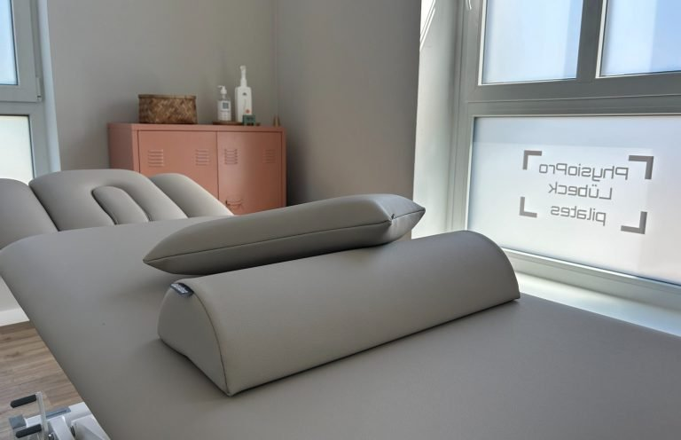
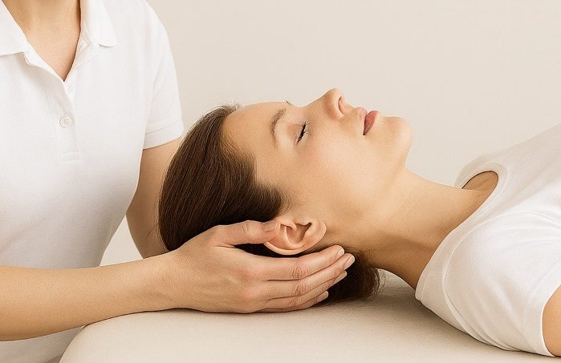
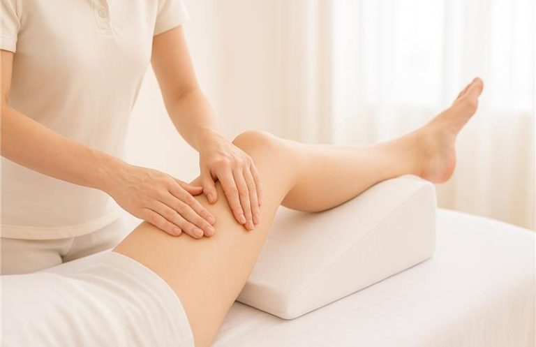
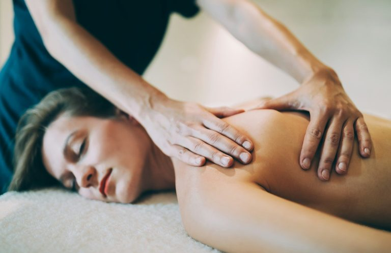
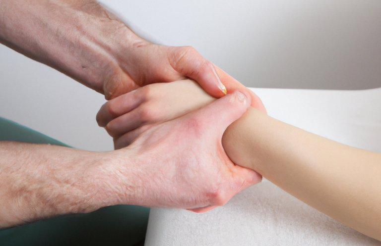
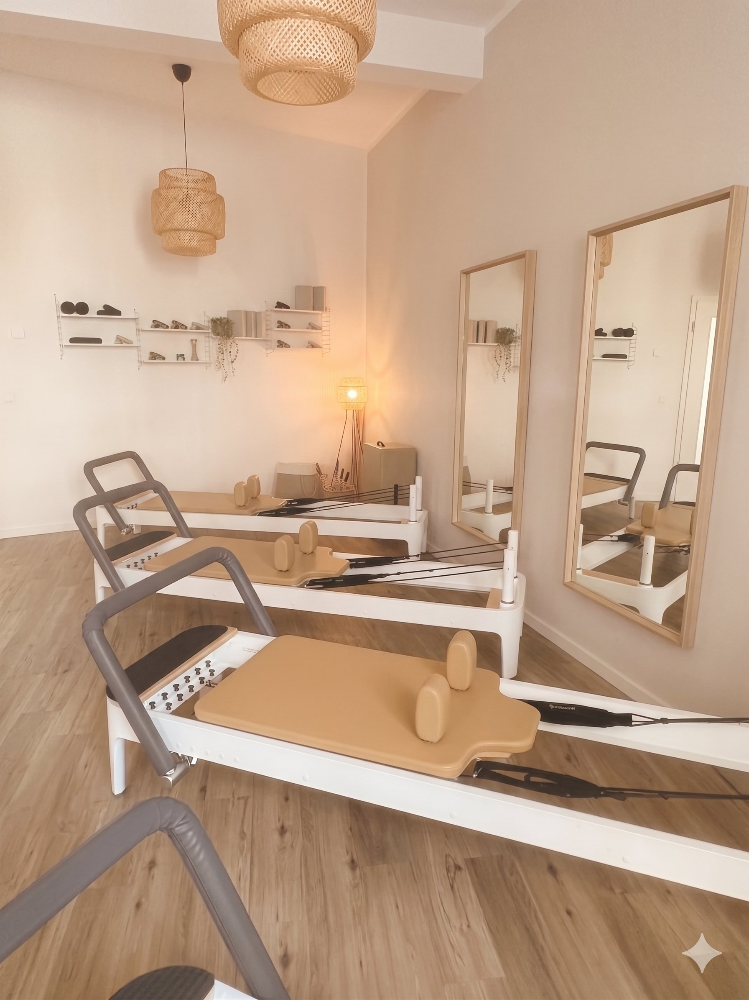

Individuelle Behandlung bei Rückenschmerzen, Gelenkproblemen und Bewegungseinschränkungen – von erfahrenen Physiotherapeutinnen in Stockelsdorf, direkt vor den Toren Lübecks. Kurze Wartezeiten, auch ohne Rezept buchbar.
Als Physiotherapeut in Lübeck und Stockelsdorf behandeln wir Menschen, die wieder schmerzfrei und beweglich sein möchten – ohne lange Wartezeiten und ohne sich wie eine Nummer zu fühlen. Unser ganzheitlicher Ansatz verbindet klassische Physiotherapie mit modernen Methoden wie der Krankengymnastik am Pilates-Reformer – einmalig in der Region.

Bei Rückenschmerzen, Bandscheibenvorfällen, Gelenkproblemen, Sportverletzungen und muskulären Beschwerden.

Ganzheitliche manuelle Therapie bei Rücken- und Gelenkschmerzen, Verdauungsproblemen, Migräne und Stresssymptomen.

Aktiviert das Lymphsystem, fördert den Abtransport von Flüssigkeitsansammlungen. Häufig bei Schwellungen oder nach Operationen.

Löst Verspannungen, lindert Schmerzen und fördert die Durchblutung. Wirkt positiv auf chronische Schmerzen und Entspannung.

Gezielte Handgriffe und Mobilisationstechniken lösen Blockaden, mobilisieren Gelenke und regulieren Muskelspannungen.

Eine der wenigen Praxen, die Pilates-Reformer für Krankengymnastik nutzen – therapeutische Präzision trifft modernes Bewegungstraining.
Rückruf anfordern oder direkt anrufen – auch ohne ärztliche Verordnung.
Wer sich nicht wohlfühlt, kann nicht richtig gesunden. Bei PhysioPro ist die Atmosphäre kein Zufall – sie ist Teil des Konzepts. Unsere Praxis ist modern, ruhig und herzlich. Vom ersten Schritt an spüren Sie: Hier bin ich richtig.
Ein entspannter Geist lässt den Körper los. Verspannungen lösen sich leichter, Therapie wirkt tiefer. Das erleben unsere Patienten täglich.
Mit zunehmendem Alter verändern sich Muskulatur, Gelenke und Gleichgewicht. Wir behandeln diese Beschwerden ruhig, geduldig und mit viel Erfahrung – damit Sie so lange wie möglich selbstständig und aktiv bleiben. Unsere Praxis in Stockelsdorf ist gut erreichbar – direkt an der Lübecker Stadtgrenze, Verlängerung der Fackenburger Allee.
Gezielte Therapie bei akuten und chronischen Beschwerden.
Beweglichkeit erhalten und Schmerzen dauerhaft reduzieren.
Sicherheit im Alltag durch gezieltes Koordinationstraining.
Hüft-TEP, Knie-TEP – schrittweise zurück in Bewegung.
Muskelaufbau und Beweglichkeitstraining altersgerecht.
Neurologische Rehabilitation mit Geduld und Expertise.
Online oder per Rückruf. Kein Warten in der Leitung. Auch ohne Rezept möglich.
Wir nehmen uns Zeit: Wo sind die Beschwerden? Was macht es besser? Was ist Ihr Ziel?
Abgestimmt auf Ihren Körper, Ihren Alltag und Ihre Ziele – kein Schema F.
Jede Einheit ist individuell. Wir erklären was wir tun, passen die Therapie laufend an – und sind auch für Fragen da.
Nach der Therapie muss kein Schlussstrich gezogen werden. Über die Pilates Company Lübeck bleiben Sie in unserer Nähe: Reformer-Kurse, ein Team das Sie kennt, Bewegung die auf Ihren Körper abgestimmt ist.